File: 000390.gt.txt (if the image is defective, simply delete all Arabic text and the line will be excluded)
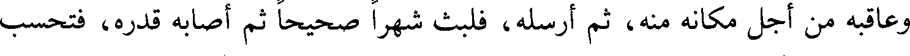
وعاقبه من أجل مكانه منه، ثم أرسله، فلبث شهرا صحيحا ثم أصابه قدره، فتحسب
File: 000391.gt.txt (if the image is defective, simply delete all Arabic text and the line will be excluded)
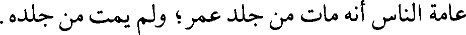
عامة الناس أنه مات من جلد عمر؛ ولم يمت من جلده.
File: 000392.gt.txt (if the image is defective, simply delete all Arabic text and the line will be excluded)
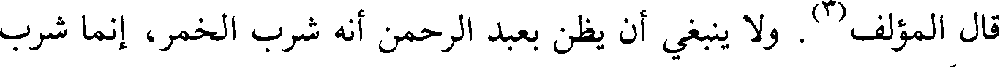
قال المؤلف(3). ولا ينبغي أن يظن بعبد الرحمن أنه شرب الخمر، إنما شرب
File: 000393.gt.txt (if the image is defective, simply delete all Arabic text and the line will be excluded)
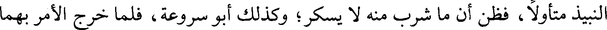
النبيذ متأولا، فظن أن ما شرب منه لا يسكر؛ وكذلك أبو سروعة، فلما خرج الأمر بهما
File: 000394.gt.txt (if the image is defective, simply delete all Arabic text and the line will be excluded)
File: 000395.gt.txt (if the image is defective, simply delete all Arabic text and the line will be excluded)
File: 000396.gt.txt (if the image is defective, simply delete all Arabic text and the line will be excluded)
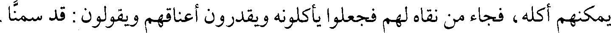
يمكنهم أكله، فجاء من نقاه لهم فجعلوا يأكلونه ويقدرون أعناقهم ويقولون : قد سمنا.
File: 000397.gt.txt (if the image is defective, simply delete all Arabic text and the line will be excluded)
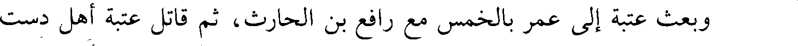
وبعث عتبة إلى عمر بالخمس مع رافع بن الحارث، ثم قاتل عتبة أهل دست
File: 000398.gt.txt (if the image is defective, simply delete all Arabic text and the line will be excluded)
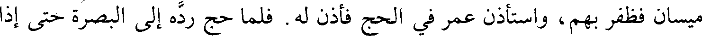
ميسان فظفر بهم، واستأذن عمر في الحج فأذن له. فلما حج رده إلى البصرة حتى إذا
File: 000399.gt.txt (if the image is defective, simply delete all Arabic text and the line will be excluded)
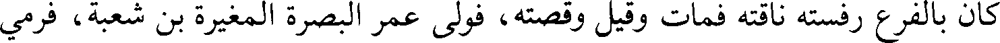
كان بالفرع رفسته ناقته فمات وقيل وقصته، فولى عمر البصرة والمغيرة بن شعبة، فرمي
File: 000400.gt.txt (if the image is defective, simply delete all Arabic text and the line will be excluded)
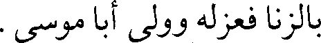
بالزنا فعزله وولى أبا موسى .
File: 000401.gt.txt (if the image is defective, simply delete all Arabic text and the line will be excluded)
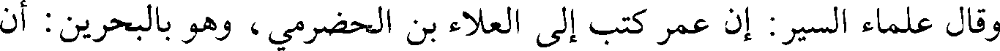
وقال علماء السير: إن عمر كتب إلى العلاء بن الحضرمي، وهو بالبحرين : أن
File: 000402.gt.txt (if the image is defective, simply delete all Arabic text and the line will be excluded)
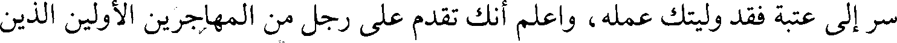
سر إلى عتبة فقد وليتك عمله، واعلم أنك تقدم على رجل من المهاجرين الأولين الذين
File: 000403.gt.txt (if the image is defective, simply delete all Arabic text and the line will be excluded)
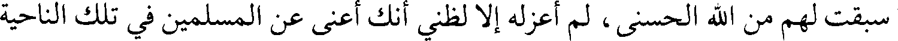
سبقت لهم من الله الحسنى، لم أعزله إلا لظني أنك أعنى عن المسلمين في تلك الناحية
File: 000404.gt.txt (if the image is defective, simply delete all Arabic text and the line will be excluded)
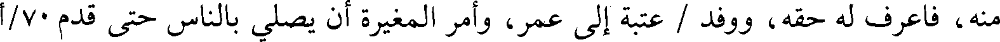
منه، فاعرف له حقه، ووفد / عتبة إلى عمر، وأمر المغيرة أن يصلي بالناس حتى قدم 70/أ
File: 000405.gt.txt (if the image is defective, simply delete all Arabic text and the line will be excluded)
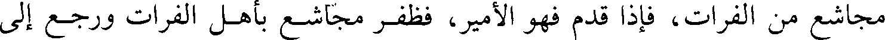
مجاشع من الفرات، فإذا قدم فهو الأمير، فظفر مجاشع بأهل الفرات ورجع إلى
File: 000406.gt.txt (if the image is defective, simply delete all Arabic text and the line will be excluded)
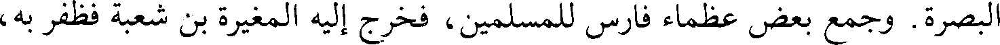
البصرة. وجمع بعض عظماء فارس للمسلمين، فخرج إليه المغيرة بن شعبة فظفر به،
File: 000407.gt.txt (if the image is defective, simply delete all Arabic text and the line will be excluded)
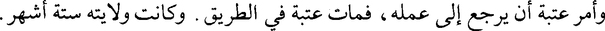
وأمر عتبة أن يرجع إلى عمله، فمات عتبة في الطريق. وكانت ولايته ستة أشهر.
File: 000408.gt.txt (if the image is defective, simply delete all Arabic text and the line will be excluded)
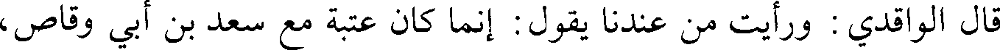
قال الواقدي : ورأيت من عندنا يقول : إنما كان عتبة مع سعد بن أبي وقاص،
File: 000409.gt.txt (if the image is defective, simply delete all Arabic text and the line will be excluded)
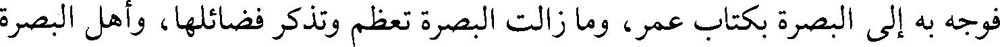
فوجه به إلى البصرة بكتاب عمر، وما زالت البصرة تعظم وتذكر فضائلها، وأهل البصرة
File: 000410.gt.txt (if the image is defective, simply delete all Arabic text and the line will be excluded)
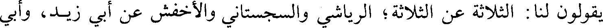
يقولون لنا : الثلاثة عن الثلاثة؛ الرياشي والسجستاني والأخفش عن أبي زيد، وأبي
File: 000411.gt.txt (if the image is defective, simply delete all Arabic text and the line will be excluded)
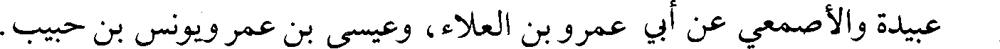
عبيدة والأصمعي عن أبي عمرو بن العلاء، وعيسى بن عمر ويونس بن حبيب.
File: 000412.gt.txt (if the image is defective, simply delete all Arabic text and the line will be excluded)
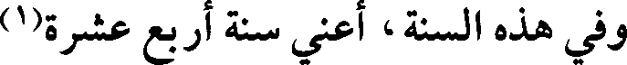
وفي هذه السنة، أعني سنة أربع عشرة(1)
File: 000413.gt.txt (if the image is defective, simply delete all Arabic text and the line will be excluded)
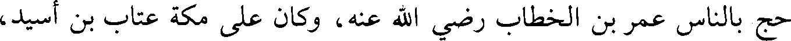
حج بالناس عمر بن الخطاب رضي الله عنه، وكان على مكة عتاب بن أسيد،
File: 000414.gt.txt (if the image is defective, simply delete all Arabic text and the line will be excluded)
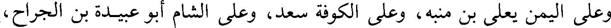
وعلى اليمن يعلى بن منبه، وعلى الكوفة سعد، وعلى الشام أبو عبيدة بن الجراح،
File: 000415.gt.txt (if the image is defective, simply delete all Arabic text and the line will be excluded)
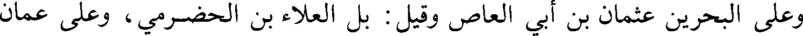
وعلى البحرين عثمان بن أبي العاص وقيل : بل العلاء بن الحضرمي، وعلى عمان
File: 000416.gt.txt (if the image is defective, simply delete all Arabic text and the line will be excluded)
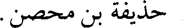
حذيفة بن محصن.
File: 000417.gt.txt (if the image is defective, simply delete all Arabic text and the line will be excluded)
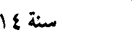
سنة 14
File: 000418.gt.txt (if the image is defective, simply delete all Arabic text and the line will be excluded)
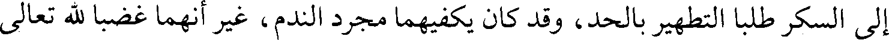
إلى السكر طلبا التطهير بالحد، وقد كان يكفيهما مجرد الندم، غير أنهما غضبا لله تعالى
File: 000419.gt.txt (if the image is defective, simply delete all Arabic text and the line will be excluded)
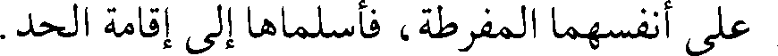
على أنفسهما المفرطة، فأسلماها إلى إقامة الحد.
To Save: `Ctrl+s`, make sure to choose `Webpage, complete`!